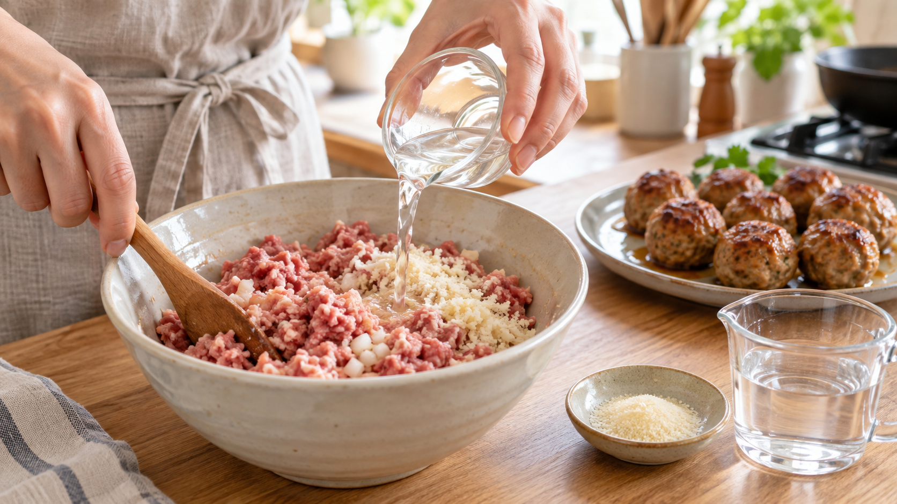

ひき肉にゼラチンを入れると、肉汁は残る？
焼きたてのミートボールは、ふっくらしている。
ところが、翌日に温め直すと、少し硬い。皿には肉汁が流れ、口の中ではパサつく。
そこで役立ちそうなのがゼラチンだ。「水を固めるのだから、肉汁も閉じ込められる」と考えたくなる。
考え方は半分合っている。ただし、ゼラチンは加熱中ずっと固い網になるわけではない。温まるとほどけ、冷えると網目を作り直す。この温度による変化まで考えると、使いどころが見えてくる。
今日の結論
ゼラチンは、ひき肉料理の水分や食感を支えることがある。ただし、焼いている最中の肉汁を必ず止める材料ではない。特に力を発揮しやすいのは、加熱後に少し冷める料理や、翌日に温め直す作り置きだ。
家庭では、ひき肉300gに粉ゼラチン5gを、水50mLでふやかしてから混ぜる。乾いた粉を直接振り入れず、いったん水となじませるのが扱いやすい。
この量は、ゼラチンの違いで食感が大きく変わらないよう、研究で使われた量より控えめにした実用的な出発点だ。
ゼラチンは、温度でほどけたり結び直したりする
ゼラチンは、肉の結合組織にあるコラーゲンをほどいたたんぱく質だ。
水と一緒に温めると、ゼラチンの鎖はばらばらに動けるようになる。冷えると鎖の一部が再び寄り集まり、水を含んだ網目を作る。このように、水を抱えたやわらかな固まりをゲルという。
たとえるなら、温かい間はほどけた毛糸が水の中を動いている。冷えるにつれ、毛糸の何か所かが結ばれ、間に水を抱えた網になる。
大切なのは、肉を焼く温度ではゼラチンの網がほどけていることだ。豚肉の筋肉たんぱく質とゼラチンを組み合わせた研究でも、30〜40℃付近にゼラチンが溶ける変化が現れた。
だから、焼く前に冷えて固まっていても、その形のまま肉汁へふたをするわけではない。加熱中は水へ溶け、肉のたんぱく質、脂、パン粉などと一緒に、全体の流れやすさを変える。
研究では、肉だねの種類によって結果が分かれた
魚由来のゼラチンを加えた鶏肉のミートボール研究では、加熱後に残る重さと水分が増え、硬さは下がった。ゼラチンの量が増えるほど、縮みも小さくなった。
ここから分かるのは、ゼラチンがひき肉の中で水分や油を支え、食感を変えられる場合があることだ。
ただし、この研究では、ゼラチンが脂の代わりとして使われ、肉だねには別のつなぎも入っていた。市販の豚・牛由来ゼラチンを家庭の合いびき肉へ少量加えれば、同じ大きさの効果が出るとまでは言えない。
もう一つの豚肉の筋肉たんぱく質と数種類のゼラチンを調べた研究では、加熱直後に残る重さはむしろ下がった。一方、冷やした後に力をかけて水を出す測定では、牛や豚由来のゼラチンが水分を残しやすくした。
この違いが教えるのは、ゼラチンの働きを一つの数字だけで決められないということだ。加熱中に汁を外へ出さない力と、冷えた後に網目の中へ水を保つ力は別である。
家庭では、ゼラチンだけに仕事を任せないほうがよい。水分を吸うパン粉、肉のたんぱく質をつなぐ塩、肉汁が流れ出る前に火を止める温度管理を一緒に使う。
粉のまま入れるより、水でふやかす
粉ゼラチンを肉へ直接振り入れると、水を吸った部分だけが固まりやすい。粒が偏れば、ゼラチンの多い場所と少ない場所ができる。
先に冷たい水へ振り入れ、数分置いて水を吸わせる。この操作を「ふやかす」と呼ぶ。次に軽く温めて溶かし、熱くない状態まで冷ましてから肉だねへ加える。
こうすれば、ゼラチンと水を肉全体へ分散させやすい。パン粉も同じ水分を受け取り、加熱中に流れ出ようとする汁の通り道を増やしにくくする。
混ぜすぎると肉のたんぱく質が強くつながり、締まった食感になる。塩を入れて粘りが出るまで混ぜたら、そこで止める。ゼラチンを入れたからといって、長くこねる必要はない。
今日の一皿：作り置き向けゼラチンミートボール
焼きたてにも使えるが、冷蔵後に温め直す場面で、ゼラチンの網目を生かしやすい配合にする。
材料（2〜3人分、8個）
- 合いびき肉 300g
- 粉ゼラチン 5g
- 水 50mL
- 生パン粉 20g
- 玉ねぎ 80g
- 卵 1個
- 塩 3g
- 黒こしょう 少々
- 植物油 小さじ1
作り方
- 小さな耐熱容器へ冷たい水を入れ、粉ゼラチンを全体へ振り入れる。5分置き、電子レンジで10秒ずつ温め、透明に溶けたら止める。熱くしすぎない。
- 玉ねぎを細かいみじん切りにする。溶かしたゼラチン液へ生パン粉を加え、粗熱が取れるまで置く。
- ボウルへ冷たい合いびき肉、塩、黒こしょうを入れ、手早く混ぜる。粘りが出たら、卵、玉ねぎ、ゼラチン液を吸ったパン粉を加え、全体が均一になったところで止める。
- 肉だねを8等分して丸め、冷蔵庫で20分休ませる。冷やすと形を保ちやすくなる。
- フライパンへ油を入れて中火で温め、ミートボールを並べる。転がしながら全面へ焼き色を付ける。
- 水大さじ2を加えてふたをし、弱めの中火で6〜8分蒸し焼きにする。最も大きい一個の中心が75℃へ達してから1分間加熱する。ひき肉は表面にいた菌が内側まで混ざるため、色だけで判断しない。
- 火を止め、ふたをしたまま5分休ませる。すぐ食べる分を盛り、作り置き分は粗熱が取れたら冷蔵する。
翌日は、ミートボールへ水かソースを少量加え、ふたをして温め直す。保存中にできた網目は再加熱でほどけるが、肉の中へ水分が均一に戻りやすくなる。
ゼラチンを増やしすぎると、別の食感になる
ゼラチンは多いほど肉汁が増える材料ではない。
量を増やすと、冷えたときに弾力が強くなり、肉らしいほぐれ方より、かまぼこや煮こごりに近いまとまりが出やすい。使うゼラチンが魚、豚、牛のどれか、どれくらい強く固まる製品かでも結果は変わる。
最初はひき肉300gに5gでよい。焼きたてのジューシーさだけを求めるなら、ゼラチンを増やす前に、肉の脂肪分、加熱しすぎ、こねすぎを見直すほうが変化は大きい。
日常へ広げるなら、「いつ食べる料理か」でつなぎを選ぶ
ゼラチンの温度による変化は、肉団子だけでなく、ミートローフ、テリーヌ、煮こごり、鶏のスープにも使える。
判断基準は、料理をいつ食べるかだ。
熱々で食べ切るハンバーグでは、ゼラチンの冷たい網目は主役になりにくい。冷まして切るミートローフや、翌日に温め直す肉団子なら、一度冷えて作られた網目が水分を全体へ保つ助けになる。
買い物では、粉ゼラチンの原料と使用量の表示を見る。製品によって固まる強さが違うため、「一袋なら同じ」と考えず、重さで量る。ゼラチンを使わない場合は、冷えると粘りが出る濃い鶏だしや牛すじの煮汁にも、同じ考え方を応用できる。
まとめ
ゼラチンは、水と混ざって冷えると網目を作る。その網目は水分を抱えるが、肉を焼く温度ではいったんほどける。
ゼラチン入りの肉だねで、加熱後の重さや水分が増えた研究はある。一方、加熱中の汁の流出を減らせなかった研究もある。
だから、ゼラチンを「肉汁を閉じ込めるふた」と考えない。
水でふやかして均一に混ぜ、パン粉と温度管理を組み合わせ、作り置きで生かす。
まずは、ひき肉300gに5g。冷えたときに戻る網目を、ひき肉料理の補助役として使ってみよう。
参考文献
- Khushboo, Kaushik N, Widell KN, Šližytė R, Kumari A. Effect of Pink Perch Gelatin on Physiochemical, Textural, Sensory, and Storage Characteristics of Ready-to-Cook Low-Fat Chicken Meatballs. Foods. 2023;12(5):995. https://doi.org/10.3390/foods12050995
- Kim TK, Ham YK, Yong HI, et al. Interaction of Porcine Myofibrillar Proteins and Various Gelatins: Impacts on Gel Properties. Food Sci Anim Resour. 2019;39(2):229-239. https://doi.org/10.5851/kosfa.2019.e18
- Huang Y, Wan C, Zhao Q, et al. Characterization of gelation time and texture of gelatin and gelatin-polysaccharide mixed gels. Food Hydrocoll. 2003;17(6):871-883. https://doi.org/10.1016/S0268-005X(03)00108-5
- 食品安全委員会. 加熱による食中毒予防のポイント. https://www.fsc.go.jp/fsciis/attachedFile/download?fileId=110&retrievalId=kai20211201ik1
※家庭向けの「ひき肉300gに粉ゼラチン5g、水50mL」は、異なるゼラチンと加工肉を調べた研究から導いた控えめな目安であり、家庭の合いびき肉で同じ効果量を保証するものではない。